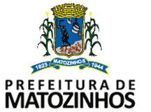
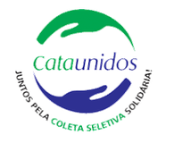
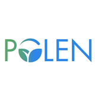
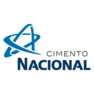
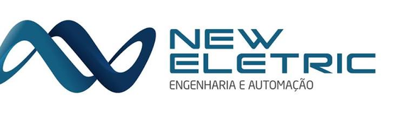
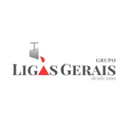
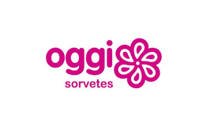

Coleta seletiva
Recolhemos materiais recicláveis de geradores parceiros — comércios, indústrias e a comunidade — organizando rotas regulares de coleta pelo município.
Matozinhos — Minas Gerais
A ASMATOZ reúne catadores de materiais recicláveis que vivem da coleta seletiva, triagem e comercialização de resíduos, gerando renda para as famílias associadas e destinação ambientalmente correta para os materiais recicláveis de Matozinhos.
Quem somos
A Associação dos Catadores de Materiais Recicláveis de Matozinhos (ASMATOZ) é uma entidade civil sem fins lucrativos, fundada em 15 de setembro de 2005, e tem como finalidade apoiar e defender os interesses dos catadores de materiais recicláveis, promover a mobilização e conscientização ambiental da comunidade, proporcionar condições de trabalho aos associados através das atividades de coleta, beneficiamento e comercialização de resíduos sólidos recicláveis e fomentar parcerias com a administração pública para a realização de serviço de limpeza urbana através da coleta de resíduos sólidos urbanos.
O que fazemos
Recolhemos materiais recicláveis de geradores parceiros — comércios, indústrias e a comunidade — organizando rotas regulares de coleta pelo município.
Separamos os materiais por tipo — papel, papelão, plásticos (PET, PEAD, PP), alumínio e outros — preparando fardos para comercialização.
Vendemos os materiais triados diretamente a empresas recicladoras parceiras, gerando renda para os associados e fechando o ciclo da reciclagem.
Nosso impacto
Entre março/2025 e abril/2026, a ASMATOZ comercializou 201,7 toneladas de materiais recicláveis, gerando R$ 184.853 em receita para os associados — e evitando um impacto ambiental significativo, detalhado abaixo.
🚗 Equivale a tirar cerca de 50 carros de circulação por 1 ano inteiro.
🌲 Preservadas das indústrias de celulose e papel.
💦 O equivalente a quase 1,5 piscina olímpica cheia.
Mais vida útil para os aterros da região e menos chorume e gás metano gerados.
Estimativas de impacto ambiental calculadas a partir do total comercializado (~201,7 t), usando coeficientes médios de impacto amplamente aceitos no setor de reciclagem e em inventários de ciclo de vida (referências como IPT, CEMPRE — Compromisso Empresarial para Reciclagem — e estimativas usuais de pegada de carbono). Valores aproximados, sujeitos a atualização.
O que reciclamos
Clique em um material para saber mais sobre ele.
Novidade
Lançamos um WebGIS interativo com os bairros, ruas e setores de Matozinhos, mostrando o dia de coleta seletiva de cada região. Agora com rastreamento do caminhão em tempo real: veja no mapa por onde a coleta está passando neste momento.
Parceiros
A comercialização dos materiais coletados pela ASMATOZ é feita com empresas recicladoras e comerciantes de sucata da região, dentro das normas ambientais aplicáveis à destinação de resíduos.







Transparência
Documentos com relatórios de atividades e prestações de contas da ASMATOZ, disponibilizados em formato PDF para consulta pública.
Ano de referência: 2025
Período: Mar/2025 a Abr/2026
Período: Mar/2025 a Abr/2026
Período: Mar/2025 a Abr/2026
Período: Mar/2025 a Mar/2026
Contato
Tem materiais recicláveis para destinar, quer ser parceiro comercial ou apoiar nosso trabalho? Entre em contato.